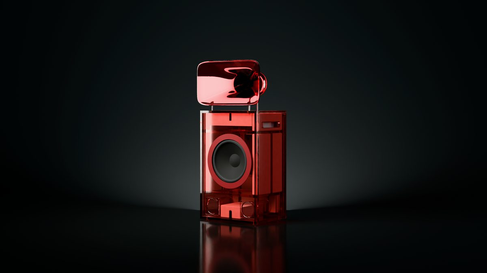

You are invitedSomething
in the air.
The first pair of Tropos, heard for the first time. Hi-fi and light in cast acrylic, in eight colours.
Tuesday 19 January 2027
[Time] · [Venue], San FranciscoRSVP
[RSVP]
The opening of the EARF pop-up · the week of FOG Design+Art
A listening room for eight weeks, opening with one night.
- When
- Tuesday 19 January 2027, [time]
- Where
- [Venue], [address], San Francisco
- Hear
- Tropos, the horn loudspeaker, its first pair built as production will build it
- See
- Mantle, the record player, and the lamps or their cast samples in the eight tints
- At the door
- One coin, one song
Everything in the room is made to order and can be reserved on the night. The pop-up then opens Thursday to Sunday, 1 to 8 pm, until mid-March.
earf.world · hello@earf.world